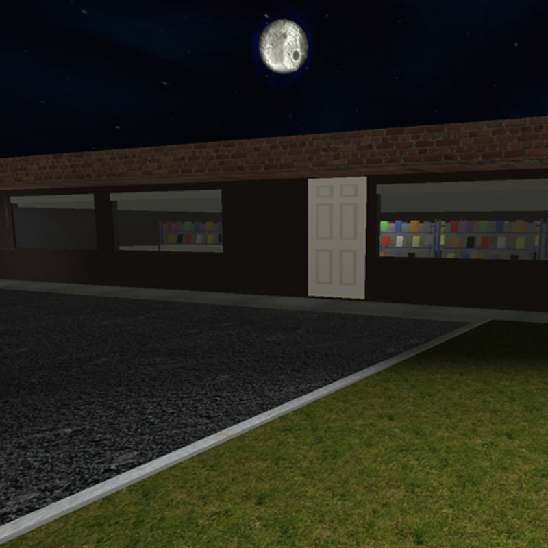
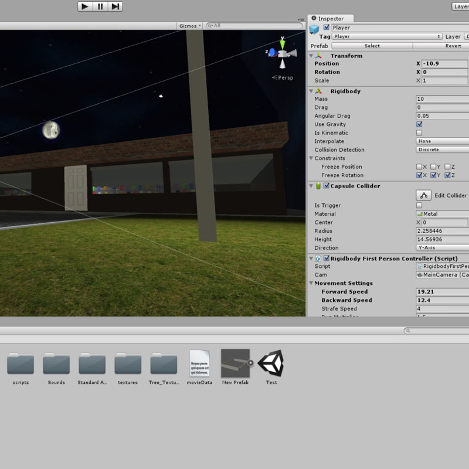

VideeVR
Description:
An interactive experience that places the user into a virtual video store.
The purpose of this is that it allows media to be browsed in a familiar and superior way.
Technologies used:
Unity, C#, Visual Studio, Photoshop, Illustrator

The Vision
A media discovery tool where users browse a dynamicaly updated catalogue of titles in an immersive store environment.
The end goal would be to have the application integrated with an existing on demand video service, so that the selection of a title leads
directly into the content.

The Method
In order to generate the title information, metadata is brought in from an outside file. When the application loads, the boxes are assigned
their respective information.
The end goal would be to have the application integrated with an existing on demand video service, so that the selection of a title leads
directly into the content.